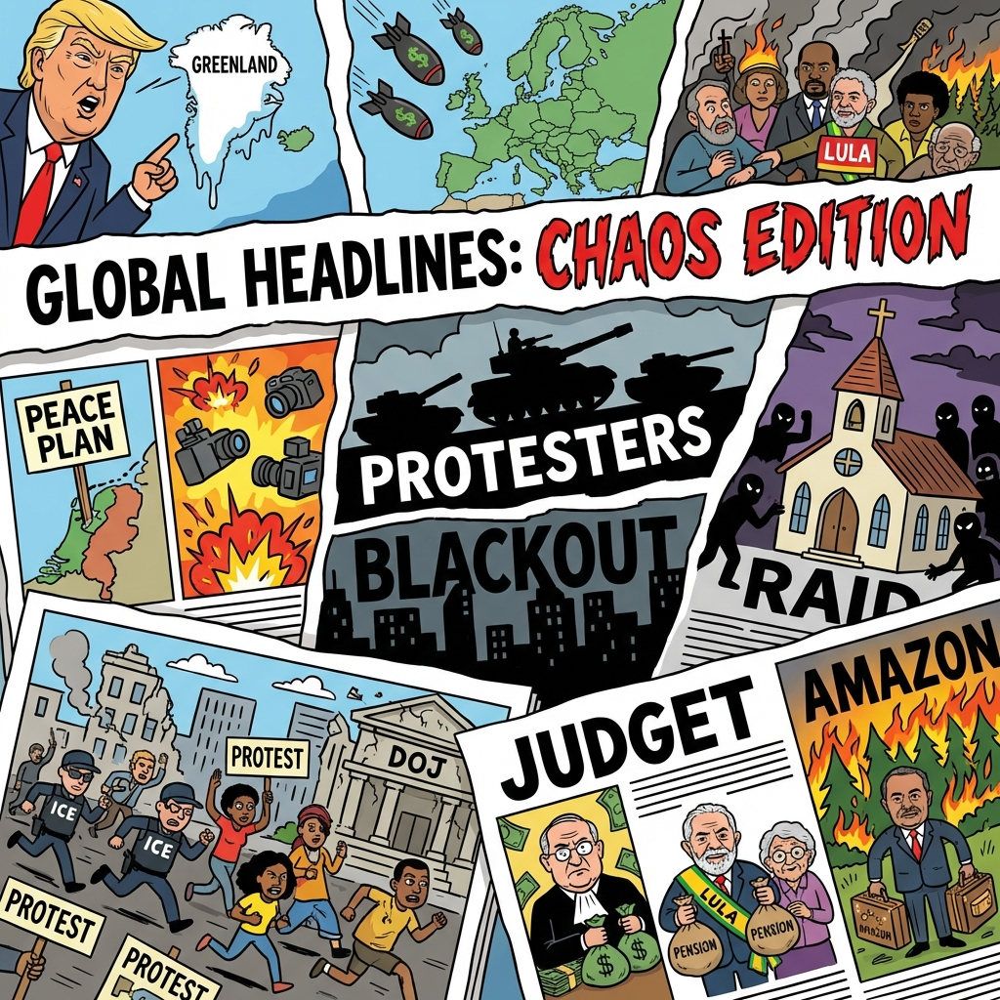

The Daily Globe: U.S.-Europe Tensions Escalate Over Trump's Greenland Push, ICE Raids Spark Outrage with U.S. Citizen Detentions, and Brazil's Judiciary Called World's Most Corrupt Institution
Published on 2026-01-22

World
- U.S.-Europe Tensions Escalate Over Trump's Greenland Push
Trump threatens tariffs on NATO allies for control of Greenland, Denmark builds up military, EU retaliation looms, fracturing transatlantic unity.
- Gaza Peace Board Accepted Amid IDF Airstrike Controversy
Netanyahu joins Trump's 'Board of Peace' despite airstrike killing journalists, Europe divided on U.S. intervention.
- Iran Protest Crackdown: Thousands Killed
Leaked photos show regime violence, internet blackouts, international calls for sanctions.
- Nigeria Confirms Mass Church Kidnappings
Abductions from churches highlight security failures and religious persecution.
USA
- ICE Raids Spark Outrage with U.S. Citizen Detentions
Aggressive operations in states like Minnesota and Maine, mistaken arrests fuel protests.
- Trump's Greenland Threats Ignite Trade War with Europe
Tariff threats on NATO allies, halted U.S. trade deals, Newsom criticizes at Davos.
- Nationwide Walkouts on Trump's Second Term Anniversary
Protests against 'fascism', highlighting debt, layoffs, healthcare costs.
- DOJ Shakeup and Epstein Files Denial
U.S. Attorney resigns, judge blocks monitor amid corruption accusations.
Brazil
- Brazil's Judiciary Called World's Most Corrupt Institution
Scandals like Mensalão and Lava Jato persist, accusations of overreach and impunity.
- INSS Pension Fraud: Up to 90 Billion Reais Embezzled
Links to Lula's family, Bank Master, diversions from elderly pensions.
- Lula Government Faces Corruption and Extravagance Charges
Ministers' spouses in fraud deals, luxury spending amid Amazon fires and high taxes.
- Lula's Internet Regulation Pledge Sparks Hypocrisy Backlash
Criticizes online 'hatred' and betting after legalizing gambling himself.
Topic Index
- geopolitical-tensions
- immigration-enforcement
- trade-disputes
- gaza-conflict
- iran-crackdown
- religious-persecution
- judicial-corruption
- pension-fraud